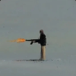
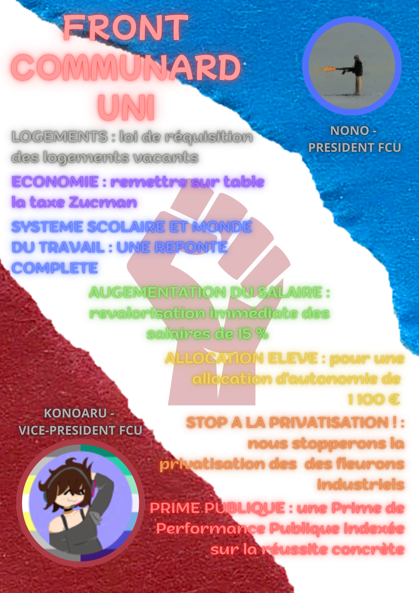

Unir le Front Communard pour une vision du monde plus juste.

Militant d'extrême gauche communo-socialiste, Nono incarne la force d'un rassemblement populaire. Il œuvre pour la refonte totale de l'activité du Front Communard, prônant une meilleure vision du monde basée sur l'unité et la solidarité humaine. Son combat face à l'extrême droite s'appuie sur la volonté du peuple pour bâtir un avenir humaniste et radieux.
Militant engagé face à l'extrême droite et membre du CMAH (Collectif Militant Humanitaire Antifasciste), Konoaru coordonne la résistance antifasciste en Haute-Garonne. En tant que militant d'extrême gauche socialiste, il insuffle une énergie nouvelle pour une meilleure activité militante, transformant chaque action en un pas de plus vers une société libérée de l'oppression.

Dernière modification : 07/03/2026 à 21:57